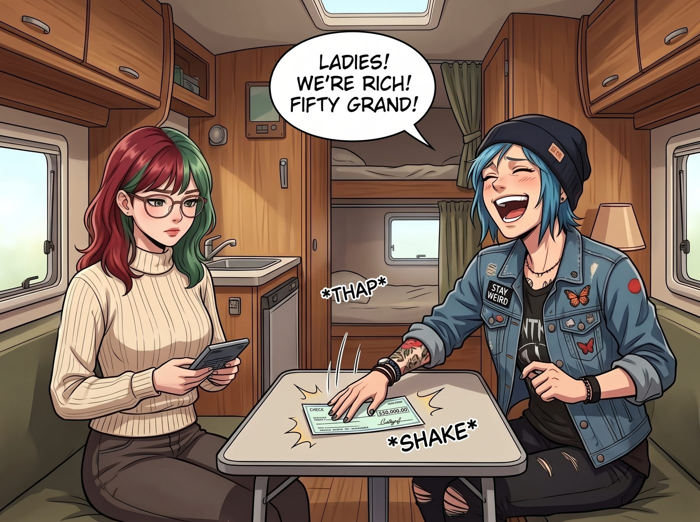

毛利的幻覺

《崩塌與重構》展覽那晚，最受矚目的作品，不是牆上任何一張寶麗來。
一位從矽谷開車北上的科技新貴，在倉庫正中央那道垂直的車燈底下站了整整二十分鐘。他盯著的，是那個放在生鏽油桶上的東西：Chloe 為 Max 焊的相機鐵殼。鈦合金骨架、減震橡膠護角、一片泛著幽藍鍍膜的防彈玻璃，旁邊的小卡片上寫著 Victoria 的字：「非賣品。」
一、非賣品
「這件粗獷主義的金屬雕塑簡直是天才之作。」科技新貴找到了正在角落喝紙杯氣泡水的 Chloe，眼裡閃著狂熱的光，「五萬美金。我要了。」
Chloe 差點把氣泡水噴出來。
但她還是搖了搖頭，語氣難得地認真：「不賣。那是我給 Max 做的護甲。她天天掛在脖子上，摔過、淋過雨，那玩意兒是用過的，不是擺著看的。」
科技新貴愣了一下，然後笑了：「那就更好了。這才叫有故事的東西。」
他想了想，換了個說法：「那妳能不能幫我做一個？同樣的風格，用妳手邊的廢料。一樣五萬，付現。」
Chloe 張了張嘴。
她原本準備好的那句「老娘不為錢工作」，在「五萬」和「付現」這兩個詞的連續轟炸下，瞬間蒸發得無影無蹤。
「……給我一個晚上。」
二、通宵
那天夜裡，營地外的空地上火花四濺。
Chloe 把從廢車場拖回來的一堆報廢變速箱拆開，挑出那些齒輪最漂亮的，一片一片磨、一片一片焊。她沒有照抄原版，而是讓齒輪層層疊疊地咬合成一個沉甸甸的外殼，看起來像某台被拆解又重新組裝的機器心臟。
Max 裹著毯子坐在旁邊的木箱上，陪了她一整夜。她沒有拍照，只是在 Chloe 摘下護目鏡喘氣的時候，遞上一杯熱咖啡。
天亮的時候，Chloe 頂著兩個巨大的黑眼圈，把那個「限量復刻版」交到了科技新貴手上。對方驚嘆了足足五分鐘，當場開了一張五萬美元的支票。
三、拆帳
回到車廂，Chloe 把那張支票啪地一聲拍在露營桌上，狂笑著宣布：「女士們！我們發財了！五萬刀！」
她的笑容維持了大約三秒鐘。
Lily 穿著整潔的針織衫，拿著一個計算機走了過來。
「恭喜您，Chloe 學姐。這是您的第一筆大額作品銷售。」她推了推眼鏡，「不過，在您計劃怎麼花之前，我們需要先把帳算清楚。」
「算什麼帳？錢就在這裡！」
「首先，」Lily 看向沙發上的 Victoria，「這件作品是在 Victoria 學姐的展覽上成交的。」
Victoria 優雅地抬起頭，毫不猶豫：「畫廊抽成百分之十五。」
「妳要抽我的錢？！」Chloe 不敢置信地瞪著她。
「這是生意，不是施捨。」Victoria 冷靜地說，「如果我今天不收，以後別的藝術家來找我，我也收不了。而且老實說，業界行情是三到五成，我只收妳十五，已經是友情價了。」
Chloe 咬著牙，說不出反駁的話。
「七千五百美元。」Lily 在計算機上按了幾下，「接著是材料。廢車場的齒輪和拆件大約兩百，一晚上的焊接用氣大約一百。這部分很少，可以忽略不計。」
「那就好——」
「然後是稅。」
Chloe 的表情僵住了。
「學姐，這是私人買賣，對方不會幫您預扣任何稅款。」Lily 的語氣很平靜，「但這筆收入在稅法上屬於您的自雇收入。除了聯邦所得稅之外，您還要繳自雇稅，也就是一般上班族由公司幫忙分攤的那部分社會安全與醫療保險稅。我保守估算過，至少需要預留一萬美元，明年四月報稅的時候交給國稅局。如果現在不留，到時候被追繳還要加罰款。」
「一萬？！」
「不過，有一個好消息。」Lily 補充道，「華盛頓州沒有州所得稅。如果您住在加州，這個數字還會更高。」
她在白板上寫下最後一行數字：
「扣掉畫廊抽成、材料費和預留稅款，您實際可以自由支配的，大約是三萬兩千美元。」
車廂裡安靜了兩秒。
「五萬變三萬二？！」Chloe 抓狂地抱住頭，「老娘焊得眼睛都快瞎了！」
「這不是任何人在剝削您，學姐。」Lily 溫和地說，「這就是賣東西本來的樣子。很多第一次賣出作品的創作者，都是在隔年四月才發現自己忘了留稅錢。您至少提早知道了。」
她頓了頓：「在真實的世界裡，毛利從來都只是一個幻覺。」
四、地圖
雖然被現實扒了一層皮，但三萬兩千美元，對 Chloe 來說依然是這輩子摸過最大的一筆錢。
她腦子裡已經開始列清單了：猛禽的 V8 可以換一套新的進氣系統、排氣管早該升級了、還有那家精釀酒廠的限量款可以一次搬十箱回來……
但她一轉頭，看到 Max 靠在沙發上，眼睛下面還帶著陪她熬了一整夜的黑眼圈。
Chloe 猶豫了。
她盯著那張支票看了一會兒，然後把它推到 Lily 面前。
「那一萬的稅錢，妳先幫我收著，實習生。老娘明年四月可不想被國稅局追著跑。」她撓了撓頭，「剩下的，兩萬我留著換零件。」
Lily 點點頭，把支票收進了文件夾。
Chloe 又轉過頭，看著 Max，語氣難得地有點彆扭：「然後……剩下那一萬二。Max，妳是不是很久沒有出去好好拍照了？自從搬來這裡，妳拍的不是車廂就是泥巴。我們……去哪裡玩一趟吧？」
Max 愣住了。
她看著 Chloe，過了好幾秒，眼睛才慢慢亮起來。
「真的？」
「騙妳幹嘛。」Chloe 別過臉，「去哪妳決定。」
Max 沒有再說話，起身跑回房間，翻出了一張邊角泛黃的美國公路地圖，攤在桌上。那張地圖顯然被她看過很多次，上面已經有幾個用鉛筆淡淡圈起來的地方。
她拿起馬克筆，沿著太平洋海岸線，從西雅圖一路往南，畫了一條長長的紅線，一直延伸到加州。
「那……我們走一號公路。」她的聲音越說越快，像是這個念頭在心裡放了很久，「等下個月加州全面解封就出發。住那些路邊的汽車旅館，吃每一家小餐館的超大份起司漢堡，我想買最貴的寶麗來底片，在大蘇爾的懸崖上拍日落……不看報表，不聽飛機噪音，不做任何理財規劃。」
她抬起頭，有點不好意思地看著 Chloe：
「我們不定回來的日子。就一路往南開，想停就停，住到這一萬二花完為止。一分都不剩。」她頓了頓，「……可以嗎？」
Chloe 看著地圖上那條紅線，又看了看 Max 發亮的眼睛，嘴角慢慢勾起一抹無比燦爛的龐克笑容。她一把把 Max 摟進懷裡，用力親了一下她的額頭。
「當然可以，超級麥克斯。我們去把這筆錢花得乾乾淨淨！」
角落裡，Lily 聽到「不做任何理財規劃」這幾個字，痛苦地皺起了眉頭，彷彿親眼目睹了世界上最惡劣的資產貶值。但她什麼都沒說，只是低頭在計算機上按了幾下，小聲自言自語：「汽車旅館、油錢、三餐、底片……以兩位學姐的消費習慣，大約可以撐四十天。」然後默默在自己的平板上建了一個新資料夾，標題是：「一號公路．沿途汽車旅館安全評級（僅供參考，不強制使用）」。
Victoria 則舉起手裡的紙杯，對著這兩個即將上路的野生動物，遙遙敬了一杯。